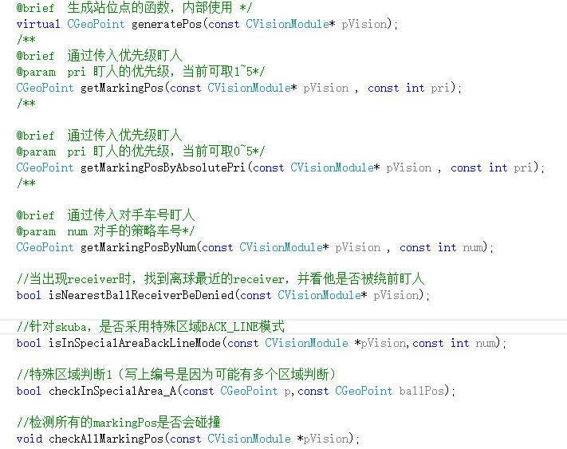

MarkingPosV2原理
基本原理¶
传入对手威胁度等级，实现对不同威胁度的对手的盯防；获传入对手车号，实现特定车辆盯防
需要考虑的因素¶
- 盯防模式：是绕前盯人（优先挤在对方车前）还是回退盯人（优先确保不失位，尽可能靠近己方球门）
- 球所在位置：如果球很靠近我方球门（此区域范围可定义），或对方发角球，以不失位为主；如果球在前场，可考虑绕前盯人，优先抢到球
用到函数¶

generatePos()是基础，其余盯人函数(CGOPoint类函数)均通过调用这个函数生成盯人点；receiver是对方接球球员
generatePos()讲解¶
几个常用量： * opp2ourGoalVector = CVector(ourGoal - oppPos) 敌方球员位置到我方球门中心向量
- angle_oppVel_opp2Goal = fabs(Utils::Normalize(opp2ourGoalVector.dir() - oppVel.dir())) 敌方球员位置到我方球门中心向量与敌方车速方向向量夹角，方向是从前者指向后者（Normalize函数是把角度归到正负2π范围里;fabs函数是绝对值）
- oppPos,basePoint,finalPoint:敌方球员位置；盯人计算中间点（计算中的过程量），最终要跑到的点（预测盯人点）
如果要盯的车是接球车¶
- 追逐模式：主要应对接球车接球后一直向球门方向直线带球进攻，比如Immortal战术
情况一：接球车比防守球员更靠近球门
即加大车辆回退距离，确保能追上
情况二：接球车比防守球员远离球门
可以考虑上抢盯人 - touch模式：更常用

综合考虑了敌方车辆速度和它与我方球门之间的角度和距离 - 绕前盯人：目的是抢先拿到球，但是风险很大

判断是否进入绕前模式，需同时满足四个条件： - 球到敌方接球车投影到速度延长线上的点的距离/(球速+0.1）>0.5 确保敌方车辆不会很快接到球
- 敌方接球车到其投影到速度延长线上的点的距离<25
- 防守球员到basePoint距离<10,优先确保防守球员不会失位的基础上再去绕前，也避免被轻易甩过
- 球速角度与opp2ourGoalVector（即图中α角）大于60度，否则球速路线与敌方接球车角度过小时，我方绕前车需跑更大的角度才能拦截，浪费时间
退出绕前模式，满足以下三者其一即可：
1. 绕前的防守球员更换（由于换车，罚下等）
2. 敌方接球车到其投影到速度延长线上的点的距离>25
3. 对方接球车更换角色，不再是接球车
如果盯的车不是接球车¶
- 常用模式

首先计算出oppPrePos,综合考虑了车速沿opp2ourGoalVector方向和垂直于opp2ourGoalVector方向的横向移动，但主要权重还是放在沿向量方向， 代码如下：
double sinPre = std::sin(angle_oppVel_opp2Goal); double cosPre = std::cos(angle_oppVel_opp2Goal); //即图中α角 if (oppPos.x() > -NORMAL_DIST && oppVel.mod() > 35 && //NORMAL_DIST为50 angle_oppVel_opp2Goal < Param::Math::PI * 75/180.0)//根据位置判断预测量 { predictTime += predictTime * (0.5 + cosPre); //predictTime基础值为0.3 } int tempFlag = Utils::Normalize(opp2ourGoalVector.dir()-oppVel.dir()) > 0 ? -1 : 1; double cosParam =1.25; double sinParam = 0.2; //这两个参数即赋予车速在不同方向上的权重分配 CVector oppVelModified = Utils::Polar2Vector(oppVel.mod()*cosPre*cosParam,opp2ourGoalVector.dir()) //图中h1向量 +Utils::Polar2Vector(oppVel.mod()*sinPre*sinParam,Utils::Normalize(opp2ourGoalVector.dir()+tempFlag*Param::Math::PI/2.0)); //图中h2向量 CGeoPoint oppPrePos = oppPos + Utils::Polar2Vector(oppVelModified.mod() *predictTime,oppVelModified.dir()); //CVector Polar2Vector(double m,double angle) //{ // return CVector(m*std::cos(angle),m*std::sin(angle)); //} CVector oppPre2ourGoal = ourGoal - oppPrePos; basePoint = oppPrePos + Utils::Polar2Vector(2*Param::Vehicle::V2::PLAYER_SIZE+5,oppPre2ourGoal.dir()); if (oppPrePos.x() > -NORMAL_DIST)//要依据效果仔细调参数 { markBuffer += (NORMAL_DIST+oppPrePos.x()) / 1.5; } //当对手有横向速度的时候，markBuffer根据sinPre的增大而增大 if (oppVel.mod() > 60)//待修改！！ { markBuffer += (ENEMY_SIN_MARK_BUFFER * sinPre * oppVel.mod() / 135.0); } - 定位球时防守

以球为圆心，r为半径画圆；与以刚刚常用模式计算出的basePoint和球门连线的交点，取与我方球门更近的点，确保防守球员更靠近球门